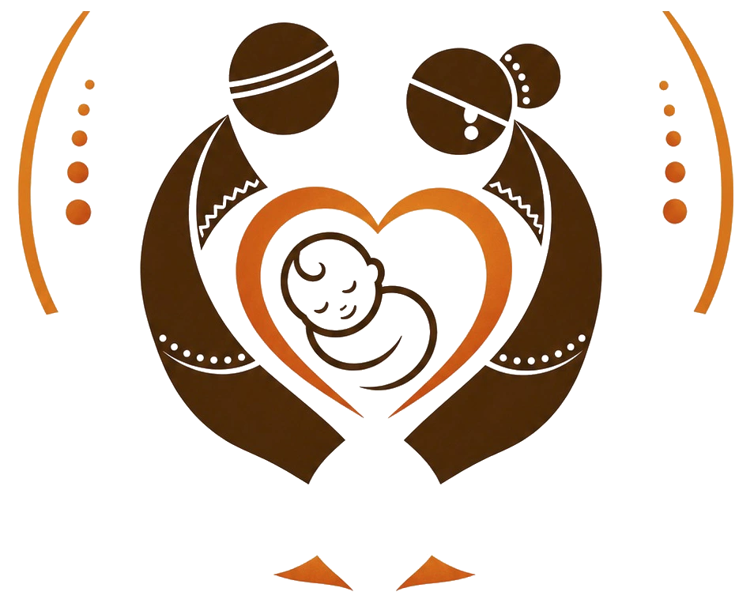
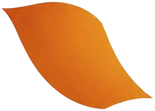
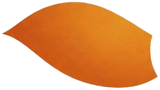
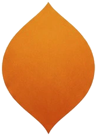
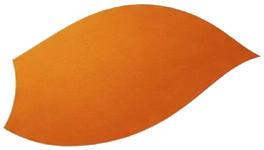
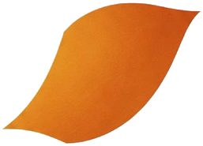

Information, no guidance
Forwards, forums and ten opinions at home. Nobody has a plan for your month.
Guiding the mother, month by month, from planning to the first smile.






शुद्ध बीजापोटी फळे रसाळ गोमटी
पाकळीला स्पर्श करा touch a petal
Your program starts from your stage today. Come in month one and you get the whole journey; come in month seven and you get Srujan Yatra and Vatsalyam. Whenever you join, you receive the full benefit of that stage.
You receive every stage from yours onward. Each program is complete in itself.
Too often they become nine months of confusion and worry.
Forwards, forums and ten opinions at home. Nobody has a plan for your month.
Will the birth be normal? Am I doing enough? Stress settles in the body, and the baby feels it.
A general class is not built for a pregnant body. Each trimester needs something else.
The science, in plain Marathi and English, without the jargon.
म्हणूनच मातृवेध. One calm, guided path, in your language, from wherever you are today.
A Professor of Yogashastra who has guided 200+ women through pregnancy and after.
Biotechnology and clinical research behind every practice, consistent with your doctor's advice.
Manashakti Research Centre, Lonavala, and Yog Vidya Gurukul. A method, not a mood.
By the second month the baby's nervous system is already forming. Long before the first day, the mother's rhythms are the child's whole world: her breath, her sleep, her movement, her calm. That world is the baby's first teacher.
Garbhasanskar is that world made deliberate. One hour a day in which the mother is cared for on purpose, and the baby is spoken to, sung to and included. Yoga keeps the body able. The science decides what belongs in the hour, and when.
Draft section. Each of the three points needs a source the founders can name before this is shown to a client.
श्वास घ्या ४ सेकंद, थांबा ४, सोडा ६. कमळ उमलते आणि मिटते.
In for 4, hold 4, out for 6. The lotus opens and closes with you.
दीर्घ श्वास घ्या आणि वर्तुळ पूर्ण होईपर्यंत हळू ओंकार म्हणा. सहा वेळा.
Breathe in, then chant a slow Om until the ring completes. Six rounds.
दोन मिनिटे. हात पोटावर, श्वास शांत, आणि बाळाशी चार वाक्ये.
Two minutes. Hands on the belly, breath settled, four sentences to your baby.
हात हळूवार पोटावर ठेवा. डोळे मिटा.
Place your hands gently on the belly. Close your eyes.तीन दीर्घ श्वास. पोट श्वासाबरोबर वर-खाली होऊ द्या.
Three slow breaths. Let the belly rise and fall.मनात म्हणा: बाळा, मी इथे आहे.
Say quietly: little one, I am here.म्हणा: तू सुरक्षित आहेस. तुझी वाट पाहते आहे.
Say: you are safe. I am waiting for you.म्हणा: आजचा दिवस तुझ्यासाठी शांत असू दे.
Say: may today be peaceful for you.एक शेवटचा श्वास. हळू डोळे उघडा.
One last breath. Open your eyes slowly.रोज एक वाक्य. मनात तीनदा म्हणा.
One line a day. Say it three times, quietly.
माझे शरीर या बाळासाठी योग्य घर आहे.
My body is the right home for this baby.१मी शांत आहे, आणि माझे बाळ ते अनुभवते आहे.
I am calm, and my baby feels it.१प्रत्येक श्वासाबरोबर मी बळ मिळवते आहे.
With every breath I grow stronger.१मला मदत मागता येते. मी एकटी नाही.
I can ask for help. I am not alone.१आजचा दिवस पुरेसा आहे. उद्याचे उद्या.
Today is enough. Tomorrow can wait.१माझे बाळ आणि मी एकत्र शिकत आहोत.
My baby and I are learning together.१खुर्चीवर बसून चार सोप्या हालचाली, प्रत्येकी ३० सेकंद.
Four easy seated movements, thirty seconds each.
मान हळू फिरवा
Slow neck circlesडावीकडे, मग उजवीकडे. झटका नको.खांदे मागे फिरवा
Shoulder rollsश्वास घेताना वर, सोडताना मागे-खाली.पाठ वाकवा आणि सरळ करा
Seated cat and cowश्वास घेताना छाती पुढे, सोडताना पाठ गोल.घोट्यांची वर्तुळे
Ankle circlesसूज कमी करण्यासाठी, दोन्ही पायांनी.Keep these five with you.
We will send the one page guide to your WhatsApp. No charge, and the practices stay free on this page either way.
Short recordings from real sessions will sit here. Every session is live and online, one hour, on weekdays, from your home.
Their journeys converged at Manashakti Research Centre in Lonavala, where they encountered a profound philosophy that later became the soul of Matruveda.
Rutuja Deshpande
Co-Founder · Yoga Therapist, Professor of Yogashastra
योग शिक्षण, कुटुंब मार्गदर्शन आणि मूल्याधारित व्यक्तिमत्त्व विकास, २५ वर्षांहून अधिक काळ.
Harshada Sahasrabudhe
Co-Founder · Biotechnologist, Yoga Therapist, Garbhasanskar educator
जैवतंत्रज्ञान, क्लिनिकल रिसर्च, आणि योग, ध्यान, रेकी व गर्भसंस्कार यांतील सखोल प्रशिक्षण.
Fifteen minutes on WhatsApp. Pick a program, leave your number, and we call back within a day.
A preview control for this prototype. The emblem keeps its own brown and saffron in every palette.